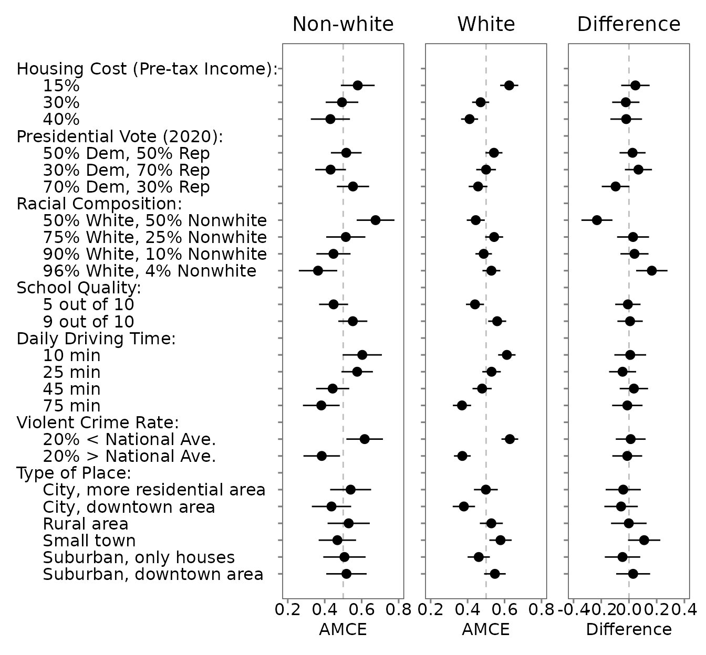

FAQ Page
faq.RmdWhat is the history of conjoint analysis? What is the difference between “profile-level” and “choice-level” data?
Conjoint designs were popular in market research.
Each respondent was given two different profiles (e.g., of a product) and then was asked to rate each of the profiles. Doing so meant that each rating could be thought of as an observation. Thus, researchers were allowed to “stack” their data vertically, with one profile-per-row (i.e., “profile-level data”). However, when respondents were then asked to make a choice between the two profiles, these profiles are no longer independent; choosing one necessarily meant not choosing the other. While researchers often still stack their data into profile-level, this should not be the case. Instead, we use choice-level data, whereby each choice consisting of two profiles is recorded as a single observation.
See the choice-level analysis article for more information about profile-level vs. choice-level structure.
See the bias correction article for more information about how projoint corrects bias.What if I have profile-level data?
We have tools available to help you with profile-level QOIs:
Profile-Level MMs (All Levels)
##
## Projoint results object
## -------------------------
## Estimand: mm
## Structure: profile_level
## Standard error method: analytical
## IRR: Estimated
## Tau: 0.172
## Number of estimates: 48
summary(mm0)##
## Summary of Projoint Estimates
## ------------------------------
## Estimand: mm
## Structure: profile_level
## Standard error method: analytical
## SE type (lm_robust): CR2 (clustered by id)
## IRR: Estimated
## Tau: 0.172## # A tibble: 48 × 6
## estimand estimate se conf.low conf.high att_level_choose
## <chr> <dbl> <dbl> <dbl> <dbl> <chr>
## 1 mm_uncorrected 0.574 0.0142 0.546 0.602 att1:level1
## 2 mm_corrected 0.614 0.0219 0.571 0.657 att1:level1
## 3 mm_uncorrected 0.485 0.0136 0.458 0.511 att1:level2
## 4 mm_corrected 0.477 0.0207 0.436 0.517 att1:level2
## 5 mm_uncorrected 0.445 0.0142 0.417 0.472 att1:level3
## 6 mm_corrected 0.416 0.0219 0.372 0.459 att1:level3
## 7 mm_uncorrected 0.489 0.0150 0.459 0.518 att2:level1
## 8 mm_corrected 0.483 0.0229 0.438 0.528 att2:level1
## 9 mm_uncorrected 0.524 0.0133 0.497 0.550 att2:level2
## 10 mm_corrected 0.536 0.0203 0.496 0.576 att2:level2
## # ℹ 38 more rowsProfile-Level MMs (Specific Level)
qoi_1 <- set_qoi(
.structure = "profile_level",
.estimand = "mm",
.att_choose = "att1",
.lev_choose = "level1"
)
mm1 <- projoint(out1, .qoi = qoi_1)
print(mm1)##
## Projoint results object
## -------------------------
## Estimand: mm
## Structure: profile_level
## Standard error method: analytical
## IRR: Estimated
## Tau: 0.172
## Number of estimates: 2
summary(mm1)##
## Summary of Projoint Estimates
## ------------------------------
## Estimand: mm
## Structure: profile_level
## Standard error method: analytical
## SE type (lm_robust): CR2 (clustered by id)
## IRR: Estimated
## Tau: 0.172## # A tibble: 2 × 7
## estimand estimate se conf.low conf.high att_level_choose
## <chr> <dbl> <dbl> <dbl> <dbl> <chr>
## 1 mm_uncorrected 0.574 0.0142 0.546 0.602 att1:level1
## 2 mm_corrected 0.614 0.0219 0.571 0.657 att1:level1
## # ℹ 1 more variable: att_level_notchoose <chr>Profile-Level MMs (Specific Level, Manual IRR)
##
## Projoint results object
## -------------------------
## Estimand: mm
## Structure: profile_level
## Standard error method: analytical
## IRR: Assumed (0.75)
## Tau: 0.146
## Number of estimates: 2
summary(mm1b)##
## Summary of Projoint Estimates
## ------------------------------
## Estimand: mm
## Structure: profile_level
## Standard error method: analytical
## SE type (lm_robust): CR2 (clustered by id)
## IRR: Assumed (0.75)
## Tau: 0.146## # A tibble: 2 × 7
## estimand estimate se conf.low conf.high att_level_choose
## <chr> <dbl> <dbl> <dbl> <dbl> <chr>
## 1 mm_uncorrected 0.574 0.0142 0.546 0.602 att1:level1
## 2 mm_corrected 0.605 0.0201 0.566 0.645 att1:level1
## # ℹ 1 more variable: att_level_notchoose <chr>Profile-Level AMCEs (All Levels)
amce0 <- projoint(out1, .structure = "profile_level", .estimand = "amce")## Warning in sqrt(diag(vcov_fit$Vcov_hat)): NaNs produced
print(amce0)##
## Projoint results object
## -------------------------
## Estimand: amce
## Structure: profile_level
## Standard error method: analytical
## IRR: Estimated
## Tau: 0.172
## Number of estimates: 34
summary(amce0)##
## Summary of Projoint Estimates
## ------------------------------
## Estimand: amce
## Structure: profile_level
## Standard error method: analytical
## SE type (lm_robust): CR2 (clustered by id)
## IRR: Estimated
## Tau: 0.172## # A tibble: 34 × 7
## estimand estimate se conf.low conf.high att_level_choose
## <chr> <dbl> <dbl> <dbl> <dbl> <chr>
## 1 amce_uncorrected -0.0899 0.0236 -0.136 -0.0435 att1:level2
## 2 amce_corrected -0.137 0.0360 -0.208 -0.0662 att1:level2
## 3 amce_uncorrected -0.130 0.0250 -0.179 -0.0808 att1:level3
## 4 amce_corrected -0.198 0.0386 -0.274 -0.122 att1:level3
## 5 amce_uncorrected 0.0348 0.0244 -0.0132 0.0828 att2:level2
## 6 amce_corrected 0.0530 0.0372 -0.0202 0.126 att2:level2
## 7 amce_uncorrected -0.00177 0.0263 -0.0536 0.0500 att2:level3
## 8 amce_corrected -0.00270 0.0402 -0.0817 0.0763 att2:level3
## 9 amce_uncorrected 0.0240 0.0233 -0.0218 0.0699 att3:level2
## 10 amce_corrected 0.0366 0.0357 -0.0336 0.107 att3:level2
## # ℹ 24 more rows
## # ℹ 1 more variable: att_level_choose_baseline <chr>Profile-Level AMCEs (Specific Level)
qoi_3 <- set_qoi(
.structure = "profile_level",
.estimand = "amce",
.att_choose = "att1",
.lev_choose = "level3",
.att_choose_b = "att1",
.lev_choose_b = "level1"
)
amce1 <- projoint(out1, .qoi = qoi_3)
print(amce1)##
## Projoint results object
## -------------------------
## Estimand: amce
## Structure: profile_level
## Standard error method: analytical
## IRR: Estimated
## Tau: 0.172
## Number of estimates: 2
summary(amce1)##
## Summary of Projoint Estimates
## ------------------------------
## Estimand: amce
## Structure: profile_level
## Standard error method: analytical
## SE type (lm_robust): CR2 (clustered by id)
## IRR: Estimated
## Tau: 0.172## # A tibble: 2 × 9
## estimand estimate se conf.low conf.high att_level_choose
## <chr> <dbl> <dbl> <dbl> <dbl> <chr>
## 1 amce_uncorrected -0.130 0.0250 -0.179 -0.0808 att1:level3
## 2 amce_corrected -0.198 0.0386 -0.274 -0.122 att1:level3
## # ℹ 3 more variables: att_level_notchoose <chr>,
## # att_level_choose_baseline <chr>, att_level_notchoose_baseline <chr>Profile-Level AMCEs (Specific Level, Manual IRR)
##
## Projoint results object
## -------------------------
## Estimand: amce
## Structure: profile_level
## Standard error method: analytical
## IRR: Assumed (0.75)
## Tau: 0.146
## Number of estimates: 2
summary(amce1b)##
## Summary of Projoint Estimates
## ------------------------------
## Estimand: amce
## Structure: profile_level
## Standard error method: analytical
## SE type (lm_robust): CR2 (clustered by id)
## IRR: Assumed (0.75)
## Tau: 0.146## # A tibble: 2 × 9
## estimand estimate se conf.low conf.high att_level_choose
## <chr> <dbl> <dbl> <dbl> <dbl> <chr>
## 1 amce_uncorrected -0.130 0.0250 -0.179 -0.0808 att1:level3
## 2 amce_corrected -0.184 0.0353 -0.253 -0.114 att1:level3
## # ℹ 3 more variables: att_level_notchoose <chr>,
## # att_level_choose_baseline <chr>, att_level_notchoose_baseline <chr>
üí° Tip: When to Use
.by_var
Use .by_var only when comparing
profile-level MMs between two groups (e.g., Democrats
vs. Republicans).
.by_var is not
currently supported.
üìà Profile-Level MMs and AMCEs
Estimate
mm <- projoint(out1_arranged, .structure = "profile_level")
amce <- projoint(out1_arranged, .structure = "profile_level", .estimand = "amce")## Warning in sqrt(diag(vcov_fit$Vcov_hat)): NaNs producedProfile-Level Subgroup Comparison: White vs. Non-White Respondents
outcomes <- c(paste0("choice", 1:8), "choice1_repeated_flipped")
df <- exampleData1 |> mutate(white = ifelse(race == "White", 1, 0))
df_0 <- df |> filter(white == 0) |> reshape_projoint(outcomes)
df_1 <- df |> filter(white == 1) |> reshape_projoint(outcomes)
df_d <- df |> reshape_projoint(outcomes, .covariates = "white")
data_file <- system.file("extdata", "labels_arranged.csv", package = "projoint")
if (data_file == "") stop("File not found!")
df_0 <- read_labels(df_0, data_file)
df_1 <- read_labels(df_1, data_file)
df_d <- read_labels(df_d, data_file)
out_0 <- projoint(df_0, .structure = "profile_level")
out_1 <- projoint(df_1, .structure = "profile_level")
out_d <- projoint(df_d, .structure = "profile_level", .by_var = "white")
plot_0 <- plot(out_0)
plot_1 <- plot(out_1)
plot_d <- plot(out_d, .by_var = TRUE)
plot_0 +
coord_cartesian(xlim = c(0.2, 0.8)) +
labs(title = "Non-white", x = "AMCE") +
theme(plot.title = element_text(hjust = 0.5)) +
plot_1 +
coord_cartesian(xlim = c(0.2, 0.8)) +
labs(title = "White", x = "AMCE") +
theme(axis.text.y = element_blank(), plot.title = element_text(hjust = 0.5)) +
plot_d +
coord_cartesian(xlim = c(-0.4, 0.4)) +
labs(title = "Difference", x = "Difference") +
theme(axis.text.y = element_blank(), plot.title = element_text(hjust = 0.5))
How did researchers design conjoint surveys previously?
Using Anton Strezhnev’s Conjoint Survey Design Tool (Link: conjointSDT)
1. Generate a JavaScript or PHP randomizer
Many researchers use Anton Strezhnev’s Conjoint Survey Design Tool (Link: conjointSDT) to produce a JavaScript or PHP randomizer.
JavaScript
The JavaScript randomizer can be inserted into the first screen of your Qualtrics survey using Edit Question JavaScript. Example screenshot:

- Example JavaScript: Download here
The JavaScript runs internally within Qualtrics and generates
embedded fields for each conjoint task.
For example:
-
"K-1-1-7"= value for the 7th attribute, first profile, first task -
"K-5-2-5"= value for the 5th attribute, second profile, fifth task
PHP
Alternatively, the PHP randomizer must be hosted externally.
Example hosted on our server:
https://www.horiuchi.org/php/ACHR_Modified_2.php
(PHP file here)
This method was used in:
Agadjanian,
Carey, Horiuchi, and Ryan (2023)
2. Modify your JavaScript or PHP randomizer
You may want to add constraints — for example, prevent
ties between profiles.
To do this, you can manually modify your JavaScript or PHP.
In the future, projoint will offer easier ways to
add constraints!
Until then, resources like OpenAI’s
GPT-4 can help you edit scripts.
Example PHP snippet ensuring racial balance between profiles:
$treat_profile_one = "B-" . (string)$p . "-1-" . (string)$treat_number;
$treat_profile_two = "B-" . (string)$p . "-2-" . (string)$treat_number;
$cond1 = $returnarray[$treat_profile_one] == "White" && $returnarray[$treat_profile_two] == $type;
$cond2 = $returnarray[$treat_profile_two] == "White" && $returnarray[$treat_profile_one] == $type;
if ($cond1 or $cond2) {
$complete = True;
}If you have good examples of manual constraints, please email Yusaku Horiuchi!
3. Add conjoint tables with embedded fields in Qualtrics
After generating the randomizer, you must create HTML tables displaying embedded fields for each task.
Example of the first task:

- Example HTML file: task_first.html
Each conjoint study typically includes 5-10 tasks.
The embedded fields update across tasks:
e.g., "K-1..." for Task 1, "K-2..." for Task
2, and so on.
Adding a repeated task (recommended!)
It’s easy to create a repeated task for intra-respondent reliability (IRR) estimation:
- Copy the HTML for Task 1 later into the survey (e.g., after Task 5)
- Flip Profile 1 and Profile 2 (swap the embedded field digits)
Example repeated task:

- Example HTML: task_repeated.html